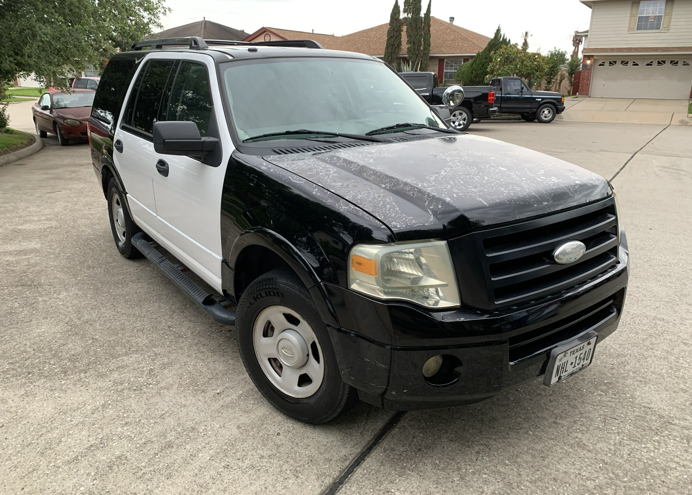
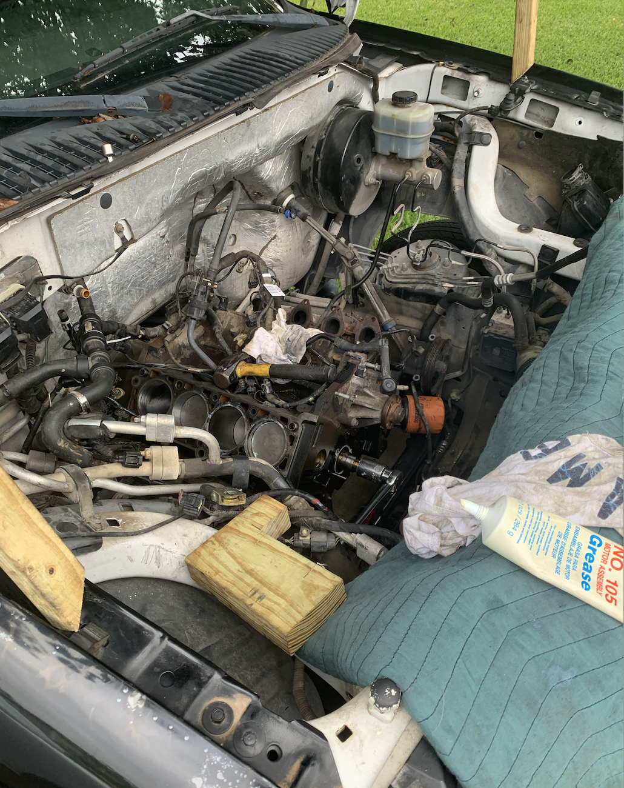
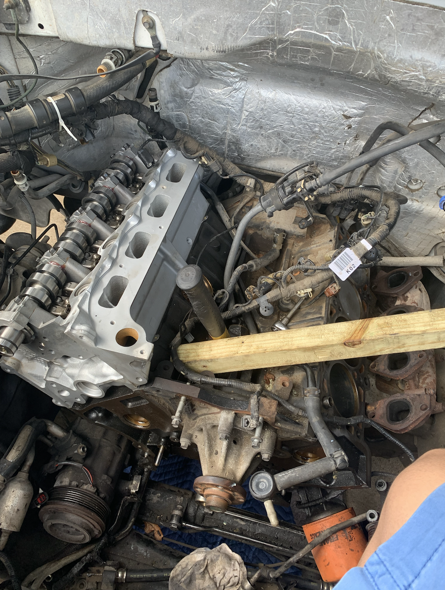
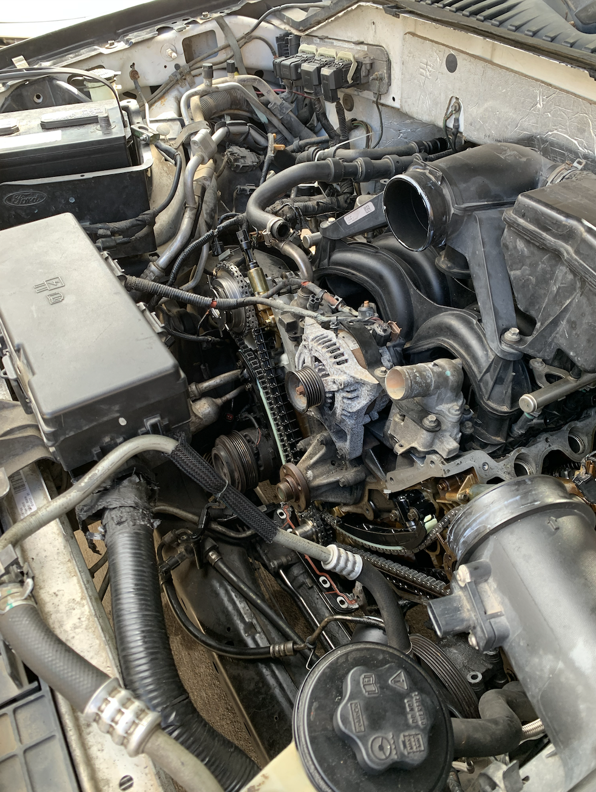

Complete engine rebuild of a Ford V8 — rebuilt from the ground up over a summer with my father

Over the course of a summer, my father and I rebuilt the 5.4L 3V V8 engine in our 2009 Ford Expedition from the ground up. The engine had developed serious internal issues that required a complete teardown and rebuild.

Open cylinders exposed for inspection

One head had broken valves and several cracks — a new head was purchased and installed

The complicated timing chain system was replaced — new cam phasers, timing chains, and guides